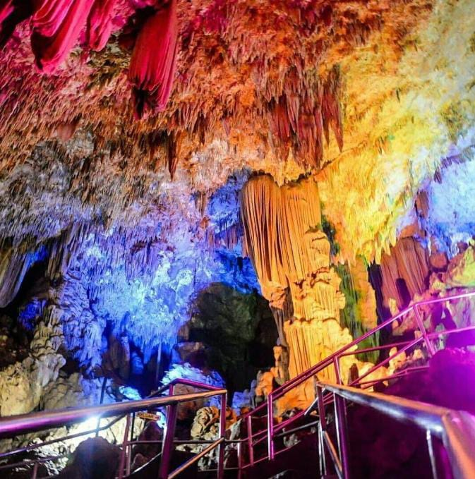
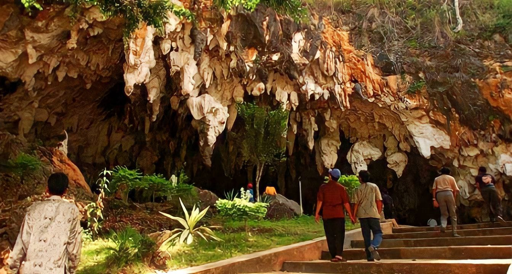

Home |
Profile |
News |
Contact |
~Pacitan The Paradise of Java~
Siapa sih yang gak tau kota Pacitan ? Sini-sini, aku bisikin sedikit seputar kota Pacitan. Sebutan kota 1001 goa melekat pada Kabupaten Pacitan. Tak lain karena banyaknya lubang alam yang berada ditanah
Pacitan.
Istilah "Pacitan Kota 1001 goa" mulai muncul antara tahun 1999 hingga 2000. Konon pencetusnya almarhum S. Endro
Waluyo.
Namanya dikenal sebagai pejabat senior di lingkup Pemerintah Kabupaten Pacitan.
Kota 1001 goa awalnya muncul tanpa sengaja, gagasan yang dilontarkan Endro langsung ditanggapi positif, meski
belum
dibakukan secara hukum, namun sebutan kota 1001 goa tersebut terus diperkenalkan di banyak kesempatan.
Bahkan satu per satu tulisan juga terpampang di landmark kota.
Pada saat itu Endro ingin mempopulerkan obyek
wisata goa yang
banyak terdapat di tiga kecamatan wilayah barat. Dua obyek yang pertama adalah Goa Gong yang terletak di desa
Bomo
dan Goa Tabuhan yang terletak di desa Wareg. Keduanya berada di kecamatan Punung. Goa gong memiliki panorama
khas berupa
stalagtit dan stalagmit yang masih aktif. Bahkan keindahannya disebut-sebut teratas di Asia Tenggara.
Sedangkan goa tabuhan memiliki kekhasan lain. Bebatuan di dalamnya jika ditabuh dapat menghasilakn harmoni
layaknya musik gamelan.
Goa Gong

Goa Tabuhan

Julukan 1001 goa untuk Pacitan bukan hanya isapan jempol, jumlah goa dikota ini ternyata sangat banyak.
Hanya saja baru segelintir yang dikembangkan sebagai obyek wisata, sedangkan sisanya masih dibiarkan saja dengan
segala kealamiannya.
Selain untuk menjaga kelestarian, goa-goa yang belum tersentuh ini memang memiliki karakteristik curam yang sulit
untuk diakses dan butuh keterampilan khusus yang ditunjang dengan peralatan lengkap untuk menjelajahinya.
Berikut 20 goa yang ada di Pacitan :
- Goa Gong
- Goa Tabuhan
- Goa Dawung
- Goa Kalak
- Goa Putri
- Goa Sukomono Dadapan
- Goa Semedi
- Goa Peden
- Luweng Plente
- Luweng Ombo
- Luweng Jaran
- Song Terus
- Goa Somopuro
- Goa Watusigar
- Goa Melikan
- Goa Bluwe
- Goa Ngarengareng Wetan
- Goa Ngleto
- Goa Mati
- Goa Kendil Jatigunung
Banyu Anget
Pacitan tidak hanya memiliki goa saja. Meskipun jauh dari gunung api aktif, Pacitan juga mempunyai pemandian air panas.
Bukan hanya sekedar air hangat, sumber air pemandian ini alami dan berasal dari dalam bumi.
Masyarakat Pacitan yang ingin mandi air hangat cukup mengunjungi Pemandian Air Hangat Tirto Husodo.
Pemandian air hangat ini tepatnya berada di Desa Karangrejo, Kecamatan Arjosari, Kabupaten Pacitan, Jawa Timur.
Harga tiket untuk pemandian air hangat di Pacitan ini hanyalah Rp.10.000 saja. Pengelola telah membuat kolam-kolam
pemandian yang airnya berasal dari sumber air panas. Sementara kolam utama suhu airnya cukup tinggi
sehingga tertutup untuk umum. Tak usah khawatir bagi yang punya anak, disana juga tersedia kolam khusus dewasa dan kolam khusus anak.
Meskipun berasal dari air belerang, namun air tetap jernih dan tidak lengket. Tiap minggunya pun dikuras sampai dua kali agar tetap bersih.
Keunggulan Banyu Anget, air hangatnya bisa untuk terapi kesehatan dan terapi untuk tubuh para pengunjung. Misalnya penyakit kulit,
reumatik, stroke dan sebagainya. Tempat ini dibuka dan dikelola oleh Pemerintah Kabupaten Pacitan sudah sejak tahun 1995
dan masuik nomor 3 di Kabupaten Pacitan, setelah Pantai Klayar dan Goa Gong.
Pemandian air hangat memiliki sejarah tersendiri, terletak dibawah bukit batu putih. Konon, dahulu kala berawal dari
seorang dalang wayang kulit melakukan pertunjukan sampai pagi. Saat ditengah pertunjukan terdengar suara
seorang gadis menyapu, sang dalang marah, seketika itu lampu tinthir yang digunakan sebagai penerangan tumpah
, dan disitulah awal bermula air sumber Banyu Anget muncul.
untuk info lebih lengkapnya cek instagram kami dibawah ini ya: